TENRYU Studio User Manual (1D)
A GUI for safely building input decks for TENRYU 1D radiation-hydrodynamics simulations using forms alone.
日本語版1. Overview and workflow
TENRYU Studio is a GUI that continuously generates a Python deck (namelist) in the right pane from form inputs, then supports validation, saving, and execution. The unit system is cgs + eV: length in cm, time in s, temperature in eV, density in g/cm3, and power in W.

The header contains Open, Save, Save As, the language selector, execution-server selector, Validate, and Run ▶. The left navigation contains Presets, Basic, Materials, Geometry, Physics, Drive, Output, Run History, and Servers. The selected form appears in the center, while the deck preview and validation panel appear on the right.
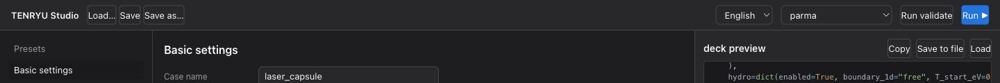
2. Three-minute quick start
-
Open Presets in the left navigation and select the 1D tab. On the card closest to your intended problem, click “Apply this preset.”
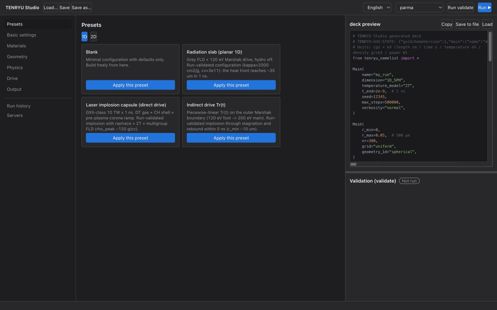
Starting from a verified 1D preset populates the form with a complete, consistent set of settings. -
Review the generated content in the deck preview on the right.
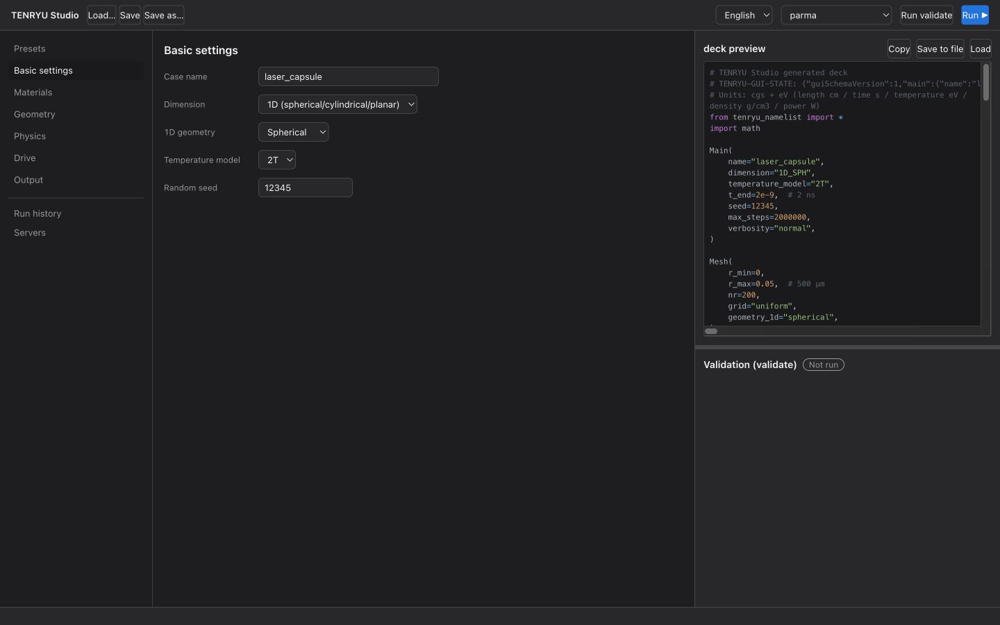
The deck preview immediately after applying a preset. Form changes appear here automatically. - Use “Save to file” to write the deck, then run
./build/tenryu run <deck>.py. If an execution server is configured, you can instead submit it with Run ▶ in the header.
3. 1D presets (run-verified)
Studio provides three physics presets plus a blank preset. All three physics presets completed successfully on actual hardware (RTX 4090) and were confirmed to produce physically valid results on 2026-07-31.
| Preset | Physics | Verified result |
|---|---|---|
| Radiation slab (planar 1D) | Gray FLD + Marshak 120 eV, hydro OFF, κ=2000 cm²/g, cve=3×1011 erg/(g·eV), ρ=0.2 g/cm³, L=100 µm, 1 ns | Wall temperature about 104 eV and radiation heat-front position about 35 µm, with a cold region remaining ahead: a textbook profile. |
| Laser implosion capsule (direct drive) | GXII class. DT gas at 0.01 g/cc / 230 µm + CH shell at 250 µm + corona ramp; 351 nm ray tracing at 10 TW × 1 ns (10 ps ramp); 2T + 20-group FLD | About 86% absorption, bang at about 1.4 ns, and ρpeak about 120 g/cc in per-step history. Completes in about 22 seconds on an RTX 4090. |
| Indirect-drive Tr(t) | Piecewise-linear Tr(t) at the outer Marshak boundary: 120 eV foot (0.5 ns) → ramp to 200 eV by 1 ns → hold through 5 ns. Ablator κ=2000 cm²/g | Bang at about 4.2–4.5 ns and minimum radius about 10 µm (CR≈30), capturing stagnation and rebound. |
4. Basic settings
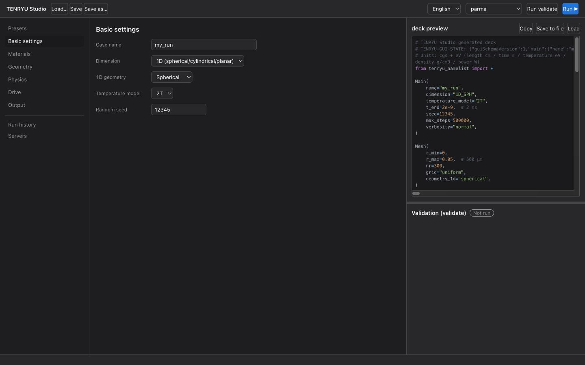
- Case name: Becomes the output directory name
outputs/<name>. - Dimension: This manual uses 1D. 2D RZ mode is outside the scope of this manual (covered separately).
- 1D geometry: Choose spherical, cylindrical, or planar symmetry.
- Temperature model: 2T is recommended in general. 1T is intended for simple problems such as the radiation slab.
- Random seed: The seed used to reproduce stochastic processes.
- Maximum steps: The upper limit on the number of calculation steps.
- End time
t_end: The physical end time of the simulation, in s.
5. Materials
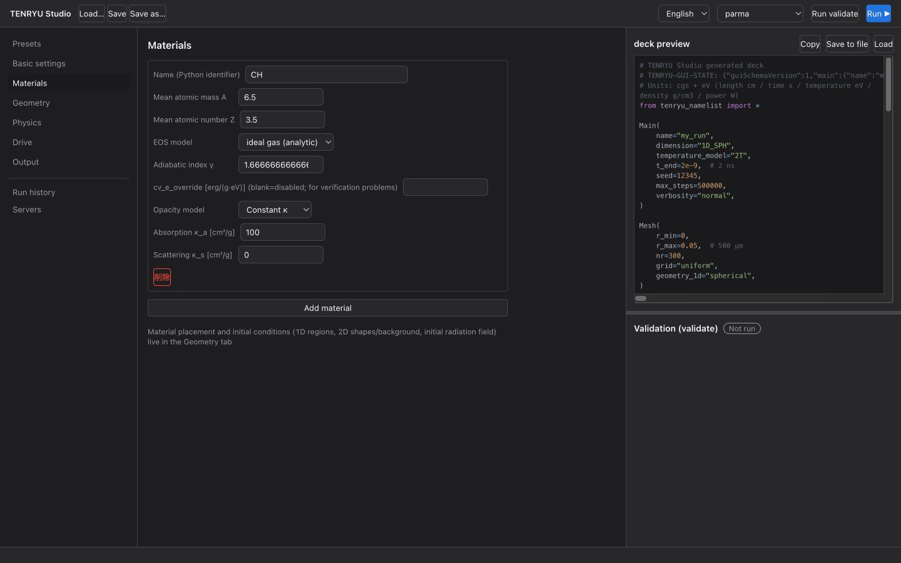
- A/Z: Specify atomic mass A and atomic number Z.
- EOS: For
ideal_gas, specify γ and override cve if needed. For a TMAT table, specify the table file. - Opacity: For
constant, specify κa and κs [cm²/g]. Tabulated opacity is also available.
6. Geometry: mesh and regions
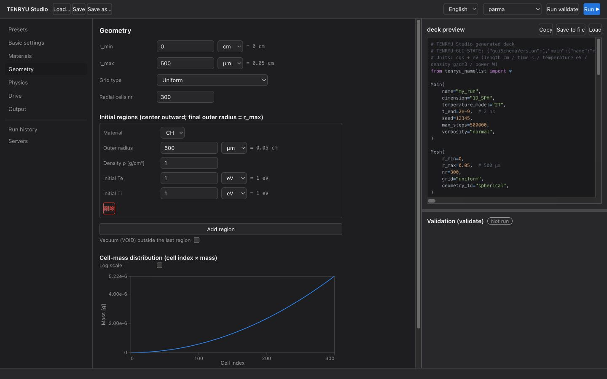
Mesh
Specify r_max, the cell count nr, and a mesh type such as uniform. This is a Lagrangian mesh that moves with the fluid.
Regions
Stack material regions from the inside outward. Each region specifies a material, outer radius rOuter, density, initial electron temperature Te, and initial ion temperature Ti. By default, the final region's rOuter must equal r_max.
Outer vacuum (VOID)
Enabling Outer vacuum masks the area outside the final region with the VOID material. This requires rOuter < r_max. Conduction and radiation do not pass through VOID, avoiding numerical pathologies caused by filling a vacuum region at the density floor.
Preplasma/corona ramp
When Outer vacuum is enabled, you can also enable the corona ramp. It places a low-density corona that decays exponentially from the final region's surface, specified by scale length L, extent, ρ0, and density floor.
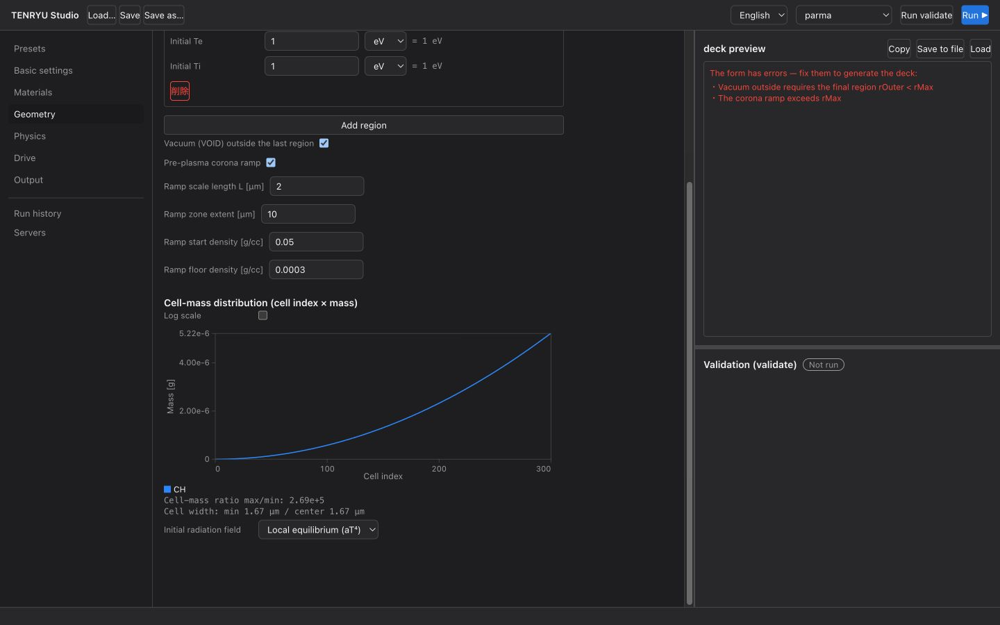
rOuter=r_max, the right pane switches to a red error list. Correcting it to rOuter < r_max automatically resumes deck generation.7. Physics
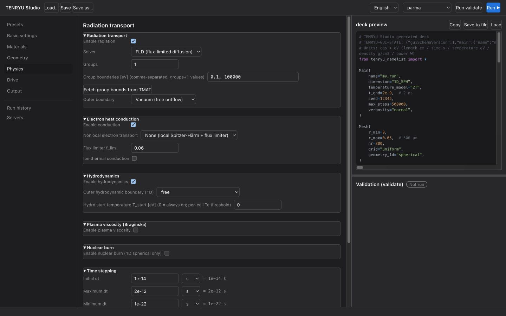
Radiation transport
Enable radiation transport and select FLD (flux-limited diffusion) as the solver. Specify the number of groups and group boundaries [eV]; one group gives gray transport. The outer boundary can be vacuum or Marshak. The Marshak temperature can be a constant Tr or a piecewise-linear Tr(t) linked to indirect drive in the Drive tab.
Electron thermal conduction
After enabling electron thermal conduction, select a nonlocal electron-transport model. “None” gives local Spitzer–Härm (SH); “SNB” gives nonlocal transport. The flux-limiter coefficient f_lim appears below the model selector and is set automatically when the model changes: SH → 0.06 (calibrated limiter), SNB → 0.5 (safety cap). Because SNB itself supplies the nonlocal suppression, leaving a small f would mask the SNB physics.
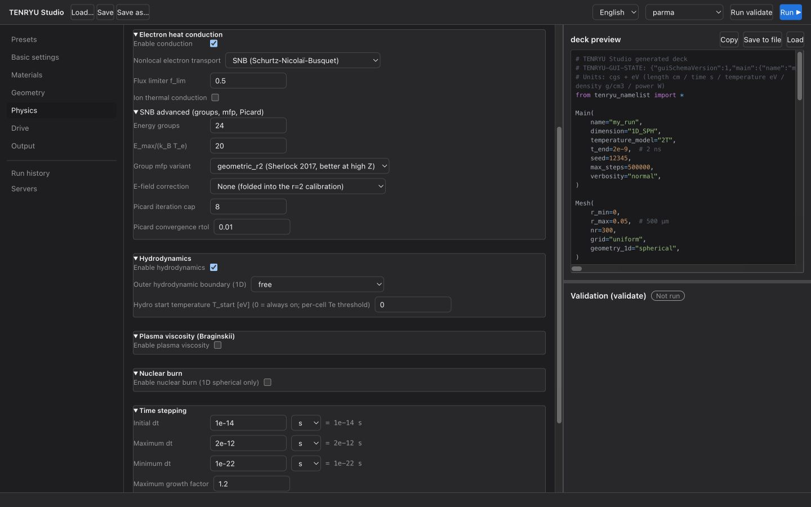
The SNB defaults are 24 energy groups, Emax/(kBTe)=20, group-mfp variant geometric_r2 (Sherlock 2017), no electric-field correction, Picard iteration limit 8, and rtol=0.01. The electric-field correction is already folded into the r=2 calibration; combining it with local would count the correction twice.
- Ion thermal conduction: Separately enable or disable ion thermal conduction.
- Hydrodynamics: Set enabled/disabled, outer boundary (
free/pressure), and start timeT_start. - Plasma viscosity: OFF by default.
8. Drive
Select the drive type from None, Direct laser drive, Radiation temperature Tr(t) (indirect drive), or External pressure Pext(t).
Direct laser drive
Set wavelength, ray tracing, waveform, power, and pulse duration. In 1D, only the optics of a single reference beam are specified; direction, beam count, and power allocation are omitted because they have no meaning in 1D. Available waveforms are rectangular with rise/fall, Gaussian, and a piecewise-linear table.
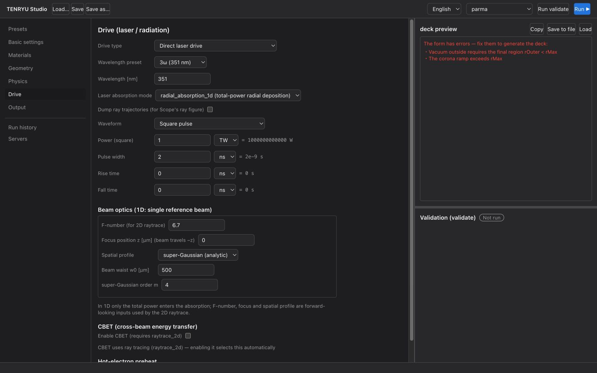
Beam optics
Set the f-number, spot size w0, and super-Gaussian order. The verified GXII values are f/3, w0=200 µm, and m=4.
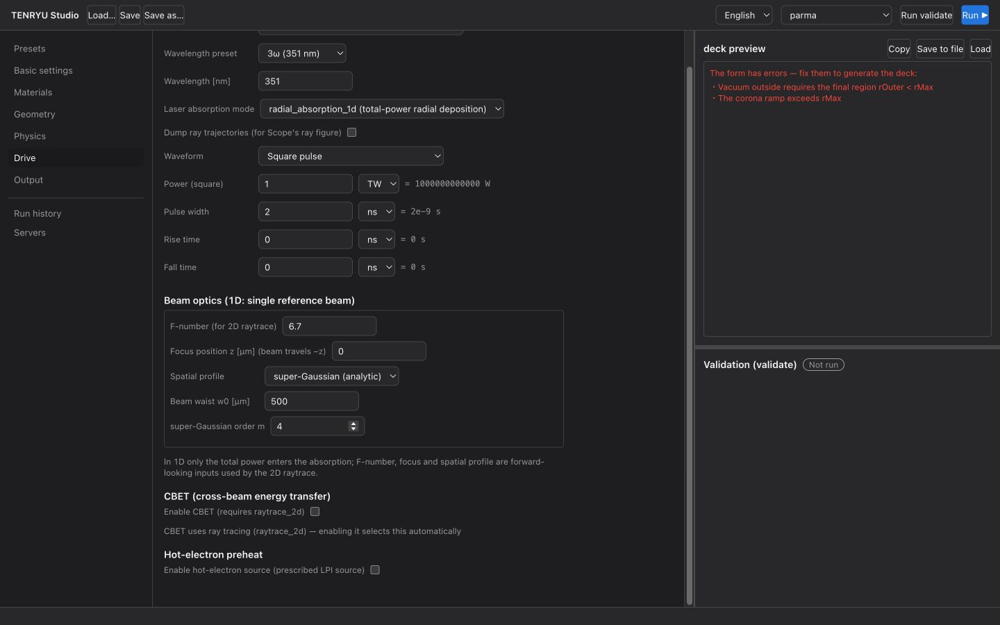
CBET
Enabling CBET reveals port-layout presets (idealized GXII 12 / OMEGA 60 / NIF 192 layouts), Δλ detuning, and related settings. This 1D-specific implementation computes multibeam energy exchange through phase-space reconstruction from a single reference trace.
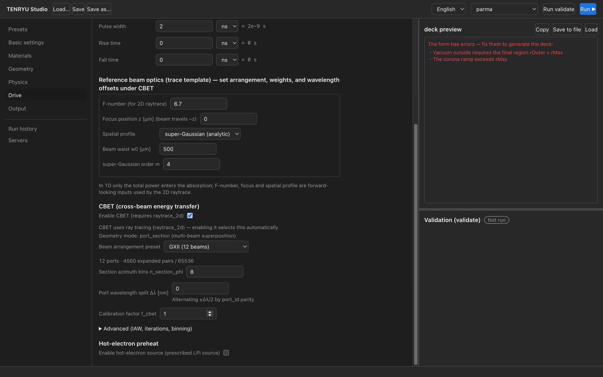
Hot electrons
Add fast-electron generation, transport, and deposition using an η(t) model and related settings.
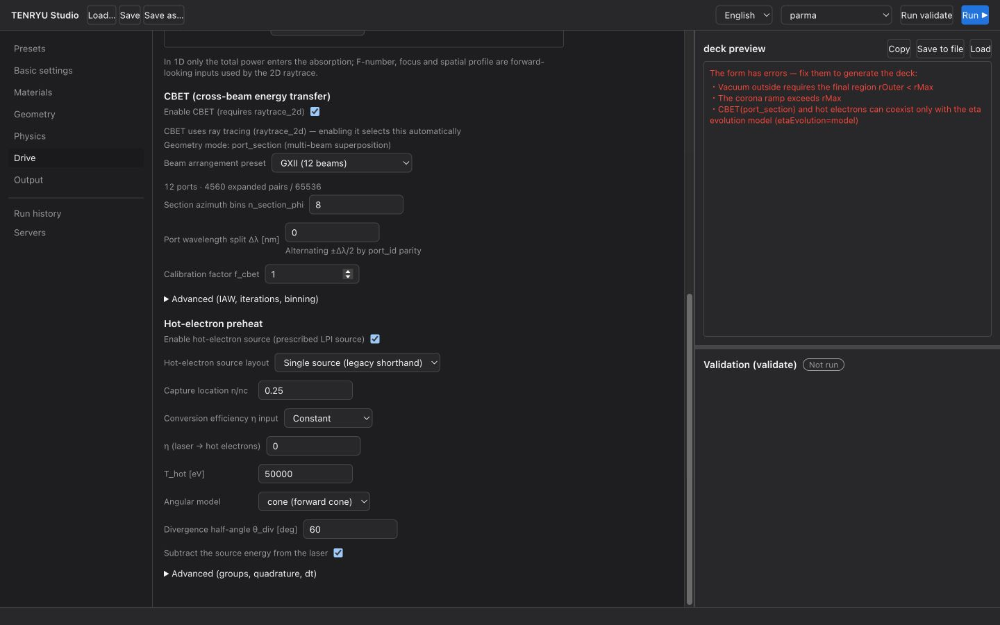
Indirect-drive Tr(t)
Selecting Radiation temperature Tr(t) as the drive type enables the Marshak Tr(t) waveform editor. See the verified indirect-drive preset in §3 for an example waveform.
External pressure
Specify the boundary-pressure drive Pext(t) for the 1D domain.
9. Output
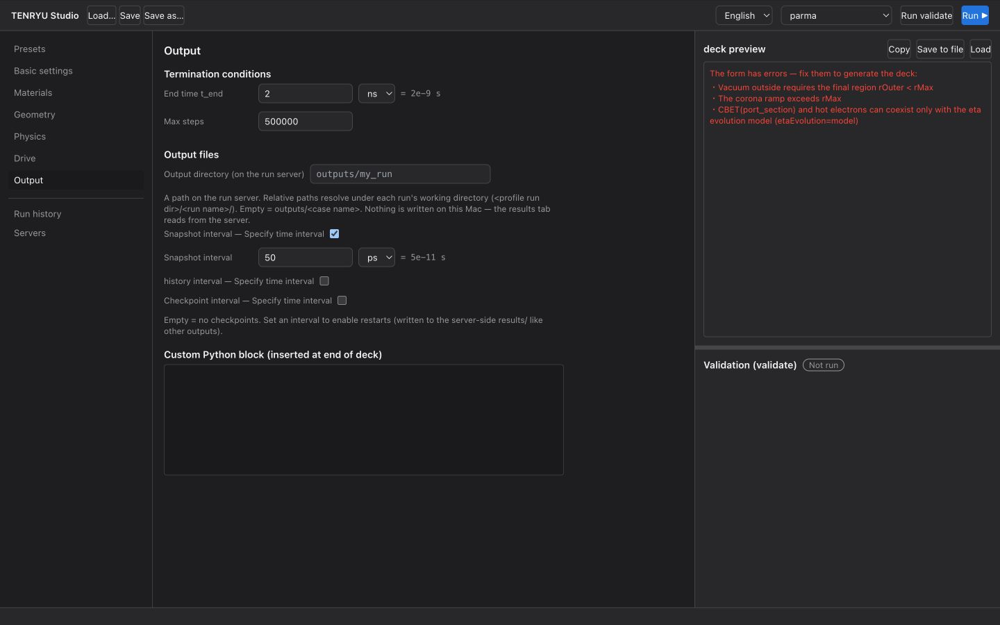
- Output directory: If blank, this is
outputs/<case-name>. - Snapshot interval: Set by
plot_every_s. - History: Saves time-series diagnostic quantities.
- Checkpoints: Configures output of restart data.
10. Reviewing, saving, and running a deck
The right pane always displays the latest deck. Use Copy, Save to file, and Open to work with it.
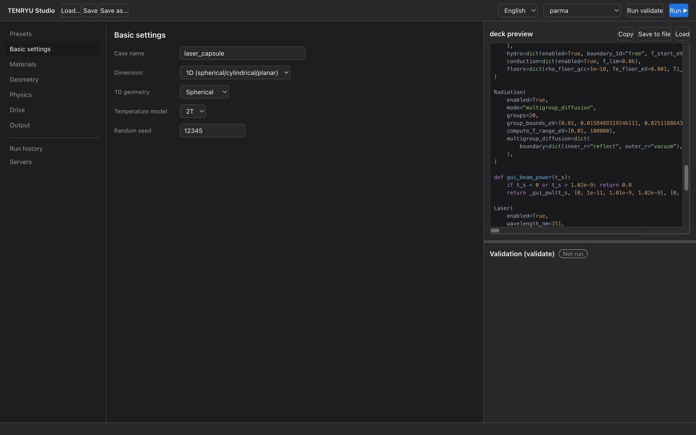
Validate performs a dry-run validation on the selected server. Run ▶ submits the job to that server; track its progress in the Run History tab. Even without a configured server, you can save the deck and run it locally as follows.
./build/tenryu run deck.py11. Troubleshooting
| Symptom | Cause | Action |
|---|---|---|
| Laser absorption is nearly zero | Corona ramp is disabled | Enable the ramp in §6. The default values are suitable. |
| The deck is absent and a red error list appears | Form validation error | Correct each listed item. For example, enabling Outer vacuum requires rOuter < r_max. |
| The shell does not implode under Marshak drive | Opacity is too low (τ<1 causes volumetric heating), or the foot is too long | Raise κ to the several-thousand cm²/g range appropriate for the real material and start the ramp earlier. Refer to the verified indirect-drive preset. |
| ρpeak is lower than the preset's stated value | Snapshot subsampling | Read the per-step history (§9). |
The run reports [dt_floor_abort] just before t_end |
Endpoint-rounding display in an older version (fixed on 2026-07-31) | Update to the latest version. |